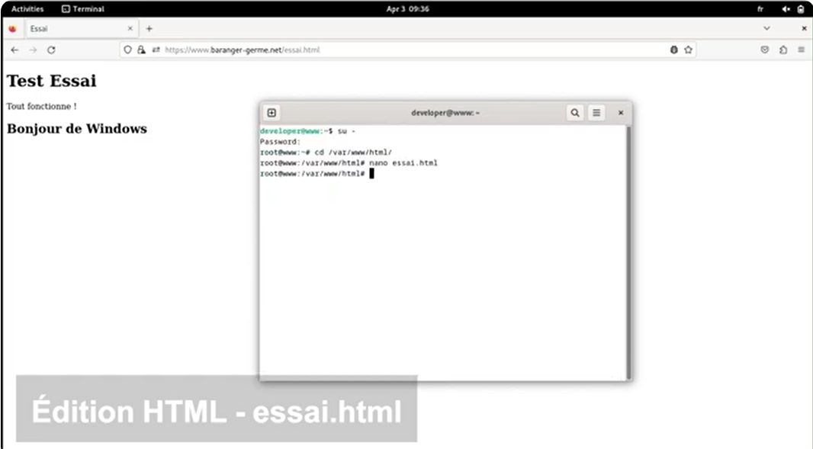
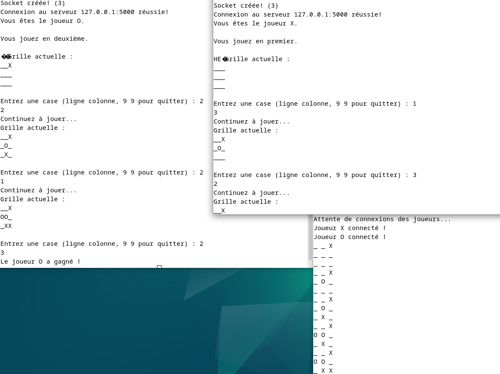
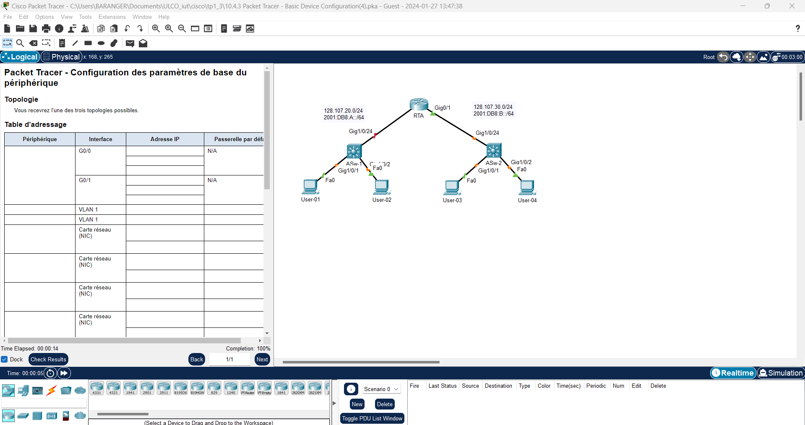
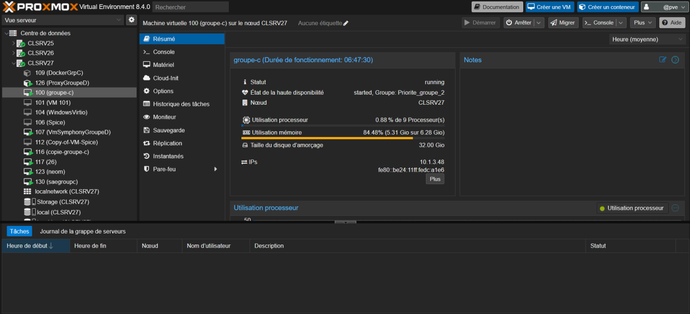
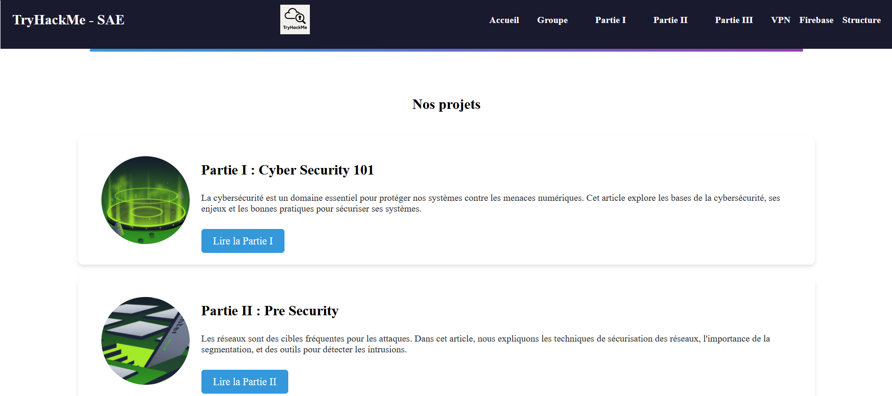
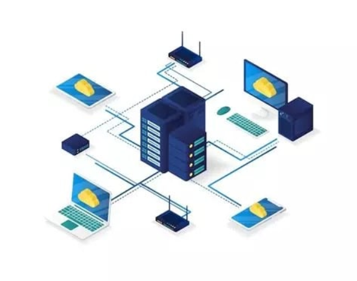

Configuration de système réseau
Durant mon année j’ai pu développer des compétences dans le domaine du réseau informatique. D’une part, durant mon alternance, j’ai pu réaliser des configurations sur le réseaux de l’entreprise. J’ai effectué des configurations sur du matériel. Ensuite, dans le cadre de projet réalisé en cours, j’ai pu consolider mes connaissances théoriques.
Création d’un serveur sur une machine virtuelle
- Durant un projet SAE réalisé en binôme, j’ai pu configurer, sur des machines virtuelles, un serveur web basé sur le PHP et avec Nginx pour permettre le développement d’une application dynamique.


Création Serveur de jeu de TicTacToe
- Lors d’un projet réalisé dans le cadre d’une SAE, j’ai pu développer un jeu de TicTacToe. Nous avons réalisé ce projet en groupe de quatre.
- Deux joueurs peuvent jouer en réseau. Il y a une communication client/serveur par Socket TCP/IP. Lorsqu’un joueur joue, l’autre voit alors la nouvelle grille s’afficher et peut jouer ensuite.
- Mes compétences en dévellopement se sont développpées en apprenant et en mettant en pratique le principe de Socket.
Conception d’un réseau informatique avec l’outil Cisco Paquet Tracer
- Durant des cours de réseau sur Cisco, j’ai appris à créer un simple réseau à partir de rien à l’aide Cisco Paquet Tracer qui permet de simuler un réseau informatique.
- J’ai également appris à configurer une infrastructure réseau afin que tous les appareils puissent communiquer ensemble, en utilisant différentes technologies et outils au sein de Cisco Paquet Tracer. J’ai pu réaliser des configurations pour réaliser du DHCP, du VPN, de l’IPv4, de l’IPv6 …


Configuration de serveur
- Lors d’un projet réalisé par groupe lors d’une SAE, nous avons pu configurer et mettre en service des serveurs.
- Ces serveurs communiquaient entre eux, ils permettaient aux autres membres de l’équipe qui réalisait la partie développement de pouvoir stocker leurs machines virtuelles et ensuite d’y accéder.
- Concernant la partie réseau, nous avons pu manipuler et configurer les serveurs via l’interface Promox. Elle nous a permis également d’attribuer des droits d’accès pour les utilisateurs.
Try Hack Me
- Lors d’une SAE réalisée en groupe de quatre, l’objectif a été de créer une interface utilisateur pour réduire le temps passé dans un magasin pour un utilisateur et optimiser ses courses.
- Avec un membre du groupe, nous avons développé l’interface utilisateur. Via cette interface, l’utilisateur peut renseigner différentes informations, il peut réaliser sa liste de courses. Les autres membres de l’équipe ont développé la partie permettant l’optimisation d’un chemin afin de proposer le chemin le plus court.


Manipulations réseaux
- Lors de mon alternance, j’ai pu effectuer différentes modifications sur du matériel Cisco et donc approfondir mes compétences dans ce domaine. J’ai modifié les ports d’un Switch afin de permettre le bon fonctionnement du matériel.
- J’ai également pu manipuler du matériel pour le configurer pour répondre à des demandes utilisateurs ou résoudre des problèmes.